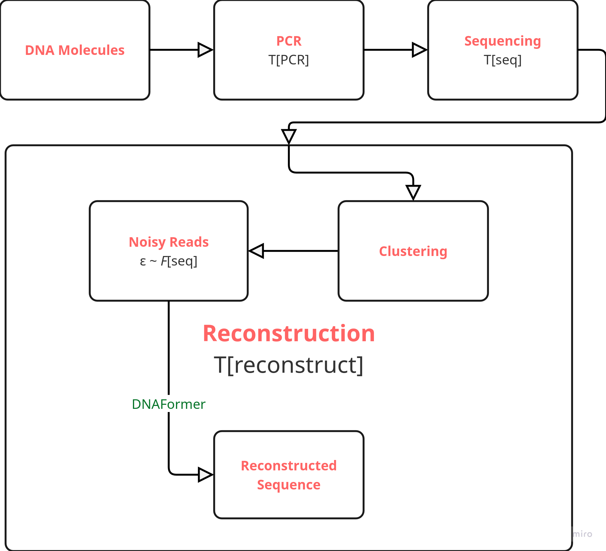
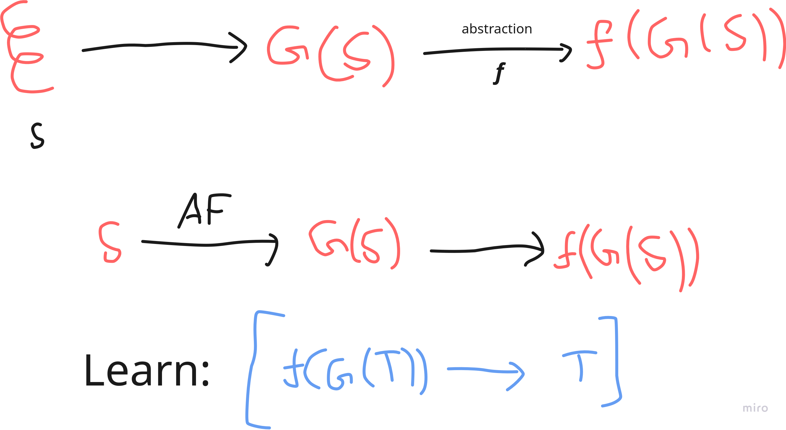

Recently, I have been thinking about the DNA storage problem quite a bit. It’s been something extremely interesting to me. Asking ChatGPT for DNA storage system use-cases, we find a heck ton of stuff:
DNA storage, an emerging technology, uses synthetic DNA to encode and store data. This approach leverages the natural stability and high density of DNA, offering innovative solutions in several areas:
Long-Term Archiving: DNA’s durability can potentially preserve data for thousands of years, making it ideal for archival storage of cultural, historical, and scientific records.
High-Density Storage: The compact nature of DNA allows vast amounts of data to be stored in a microscopic volume, which is particularly useful in data centers and environments where space is at a premium.
Sustainability: Compared to traditional electronic storage, DNA storage may offer energy-efficient alternatives with minimal environmental impact during long-term data preservation.
Data Security and Longevity: DNA storage’s unique encoding process may add an extra layer of data security and protection against obsolescence, ensuring that information remains accessible as technology evolves.
As research continues, DNA storage could revolutionize how we think about data preservation, combining biological inspiration with digital innovation.
In this blog post: I would like to present some of my ideas on how DNA sequencing can be improved (I am not a biologist so please feel free to tell me if I am spewing nonsense, haha!) Before that, though, let me quickly present the context in which thinking about this came to be.
Primer: Current SoTA on the DNA Storage problem
An end-to-end DNA storage solution has to be able to perform fast writing (i.e. encoding electronic information into DNA sequences) and fast reading. Writing, as it stands, has more-or-less been solved.
There is a well-known method called Combinatorial Assembly / Sequence Assembly [1],[2] which goes like: have a collection of pre-generated small DNA sequences. Now, given the arbitrary DNA sequence you want to generate, pick and choose from the collection of pre-generated sequences to form a longer sequence that better represents the wanted sequence. Keep repeating this until you form the whole sequence.
This achieved writing speeds of upto 1 Mbps, which is fast enough. The next problem is reading (i.e. decoding DNA sequences into bits and bytes).

The end-to-end process of the SoTA in reading the DNA sequences has been demonstrated in the image above. [3] The DNA sequence is broken into chunks, and then it undergoes PCR which quickly multiplies the chunks. I call the time taken to do this \(T_{\text{PCR}}\). Then, these sequences undergo sequencing (via nanopore / illumina sequencing) which convert these chemical sequences into electronic data. I call the time taken to do this \(T_{\text{seq}}\).
However, we have two problems here:
We do not know which chunk followed which chunk in the original sequence.
The generated reads are noisy. We want to remove the noise.
To solve the first problem, the noisy reads are clustered into groups according to their noise distributions \(\boxed{\varepsilon \sim F_{\text{seq}}}\). The hypothesis is different starting chunks onstrate distinctly different noise distributions after the whole process is followed through.
The second problem is solved by DNAFormer which is a transformer model trained on the noisy reads to generate the original reads. It has been trained using synthetic data generated by estimating the noise distribution.
I call the reconstruction time \(T_{\text{reconstruct}}\). Therefore,
\[ T_{\text{read}} = T_{\text{PCR}} + T_{\text{seq}} + T_{\text{reconstuct}} \]
Now, if we had to make DNA storage solutions commercial we would need this time to be low. Notice that:
\(T_{\text{PCR}}\) is highly parallelizable. This won’t cause us issues for most use-cases.
\(T_{\text{seq}}\) stands at around 2.2 seconds for every 1 kilo-base pair read.
\(T_{\text{reconstruct}}\) has come down rapidly after [3]. (Orders of minutes that once took hours / days)
Therefore: the bottleneck that remains is \(T_{\text{seq}}\). This is important.
Ideas on improving \(T_{\text{seq}}\)
Let \(\mathbb{S_n} = \{A,T,C,G\}^n\). Let \(G : \mathbb{S_n} \to P(\mathbb{R}^3)\) be the function that maps a DNA sequence \(S \in \mathbb{S_n}\) to the geometrical structure that \(S\) forms upon folding.

Let \(f\) be a function that takes in the total geometry of the sequence and outputs the local geometries around the molecule. Ofcourse, \(f\) can be concatenated with dipole information, magnetic information etc.
The idea is: given a DNA sequence \(S\) which hasn’t been sequenced yet, we want to (somehow) quickly figure out the information \(f(G(S))\), and use that information to somehow figure out what the original \(S\) is. Essentially, we would want to learn the map \(\boxed{f(G(T)) \to T}\).
Using AlphaFold, and similar techniques, one could generate lots of data on how \(f(G(T))\) would look like for lots of different sequences. This is crucial, and is the reason why ideas like this wouldn’t have worked earlier.
For this idea to work, there are some crucial assumptions made (which need to be thought about).
Assumptions
\(\exists \ \delta \ \forall S, |S| < \delta\)
\[ G(S) \text{ is unique.} \]
which is saying that for small DNA sequences the generated topology is unique.
There exists a fastly-observable \(f\) that can be used to invert the map, and hence, obtain \(T\).
\(f\) is “more-or-less” one-one.
One Step Further
DNA sequences are used because they exhibit very interesting and useful properties.
Using
- DNA Polymerase,
- restriction enzymes,
- and techniques like PCR
one can manipulate DNA sequences as needed. This is especially why DNA sequences are preferred. However, there could be other biochemical molecules that demonstrate capabilities of being manipulated similarly, and also turn out to be better candidates for the biochemical storage problem.
This could be due to possibilities of finer manipulation, or have better \(f\) or could have easier-to-learn inverse mappings \(\boxed{f(G(T)) \to T}\).